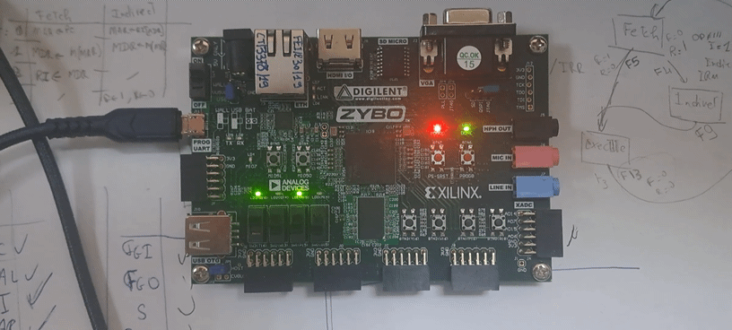
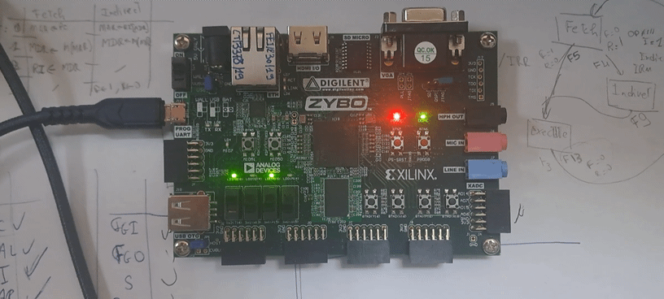

Jugurtha Bellagh
PhD Student in Electronic Embedded Systems
Languages
C, C++, English, French, Go, Java, Python, Ruby, Verilog, VHDL
Projects
-
BProC-CLI
Description: BProC is a compiler for basic processor designs, it uses assembly code written in .bpasm files. BProC-CLI is a simple command line interface for compiling assembler files .bpasm for basic processors intended for education use. The vision of the project is to provide simple way to generate RAM programs while designing basic processors. The project, as it is, provide a rigid instruction set, but the goal is to provide a configurable instruction set.
Languages and tools: Java, Maven, jpackage, wix tools.
-
BProC-WEB
Description: BProC-WEB is the web version of the BProC-CLI project (see the next project below). It uses the same CLI proxied with a web interface.
Languages and tools: Go, SvelteKit, docker.
-
Basic Processor
Description: Basic Processor is a basic processor described in VHDL with custom instruction set of 24 instructions. The processor is tested on a Digilent Zybo board.
Languages and tools: VHDL, Vivado 2024, Digilent Zybo.

BProC-CLI
Description: BProC is a compiler for basic processor designs, it uses assembly code written in .bpasm files. BProC-CLI is a simple command line interface for compiling assembler files .bpasm for basic processors intended for education use. The vision of the project is to provide simple way to generate RAM programs while designing basic processors. The project, as it is, provide a rigid instruction set, but the goal is to provide a configurable instruction set.
Languages and tools: Java, Maven, jpackage, wix tools.
BProC-WEB
Description: BProC-WEB is the web version of the BProC-CLI project (see the next project below). It uses the same CLI proxied with a web interface.
Languages and tools: Go, SvelteKit, docker.
Basic Processor
Description: Basic Processor is a basic processor described in VHDL with custom instruction set of 24 instructions. The processor is tested on a Digilent Zybo board.
Languages and tools: VHDL, Vivado 2024, Digilent Zybo.
